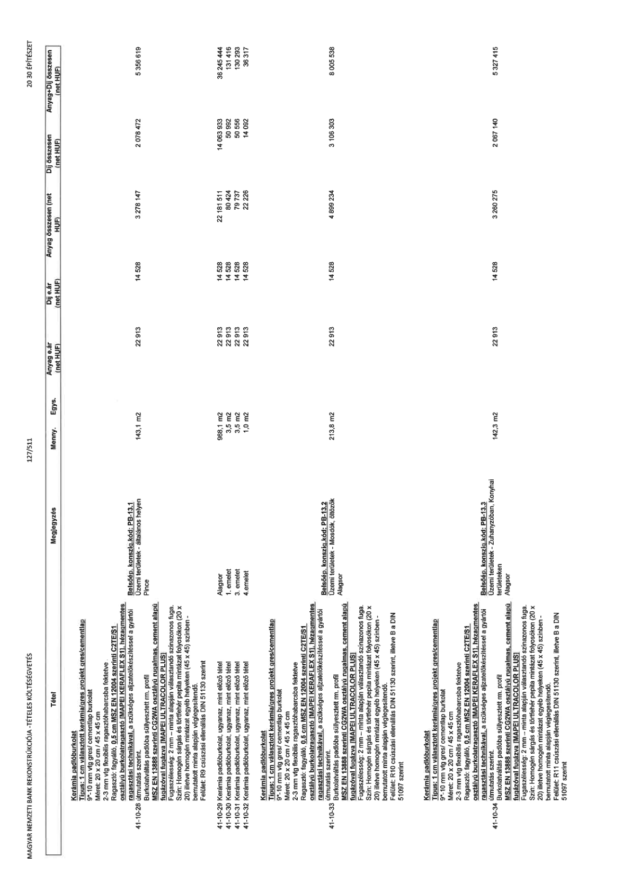

| Tétel | Megjegyzés | Menny. | Egys. | Anyag e.ár (net HUF) | Díj e.ár (net HUF) | Anyag összesen (net HUF) | Díj összesen (net HUF) | Anyag+Díj összesen (net HUF) |
|---|---|---|---|---|---|---|---|---|
| 41-10-28 Kerámia padlóburkolat Típus: 1 cm választott kerámia/gres projekt gres/cementlap 9"-10 mm vtg gres/ cementlap burkolat Méret: 20 x 20 cm / 45 x 45 cm 2-3 mm vtg flexibilis ragasztóhabarcsba fektetve Ragasztó: fagyálló, 0,5 cm MSZ EN 12004 szerinti C2TE/S1 osztályú burkolatragasztó [MAPEI KERA FLEX S1], hézagmentes ragasztási technikával, a szükséges aljzat előkészítéssel a gyártói útmutatás szerint. Burkolatváltás padlóba süllyesztett rm. profil MSZ EN 13888 szerinti CG2WA osztályú rugalmas, cement alapú fugázóval fugázva [MAPEI ULTRACOLOR PLUS] Fugaszélesség: 2 mm - minta alapján választandó színazonos fuga. Szín: Homogén sárgás és törtfehér pepita mintázat folyosókon (20 x 20) illetve homogén mintázat egyéb helyeken (45 x 45) színben - bemutatott minta alapján véglegesítendő. Felület: R9 csúszási ellenállás DIN 51130 szerint | Belsőép. konszig. kód: PB-13.1 Üzemi területek - általános helyen Pince | 143,1 | m2 | 22 913 | 14 528 | 3 278 147 | 2 078 472 | 5 356 619 |
| 41-10-29 Kerámia padlóburkolat, ugyanaz, mint előző tétel | Alagsor | 968,1 | m2 | 22 913 | 14 528 | 22 181 511 | 14 063 933 | 36 245 444 |
| 41-10-30 Kerámia padlóburkolat, ugyanaz, mint előző tétel | 1. emelet | 3,5 | m2 | 22 913 | 14 528 | 80 424 | 50 992 | 131 416 |
| 41-10-31 Kerámia padlóburkolat, ugyanaz, mint előző tétel | 3. emelet | 3,5 | m2 | 22 913 | 14 528 | 79 737 | 50 556 | 130 293 |
| 41-10-32 Kerámia padlóburkolat, ugyanaz, mint előző tétel | 4.emelet | 1,0 | m2 | 22 913 | 14 528 | 22 226 | 14 092 | 36 317 |
| 41-10-33 Kerámia padlóburkolat Típus: 1 cm választott kerámia/gres projekt gres/cementlap 9"-10 mm vtg gres/ cementlap burkolat Méret: 20 x 20 cm / 45 x 45 cm 2-3 mm vtg flexibilis ragasztóhabarcsba fektetve Ragasztó: fagyálló, 0,5 cm MSZ EN 12004 szerinti C2TE/S1 osztályú burkolatragasztó [MAPEI KERA FLEX S1], hézagmentes ragasztási technikával, a szükséges aljzat előkészítéssel a gyártói útmutatás szerint. Burkolatváltás padlóba süllyesztett rm. profil MSZ EN 13888 szerinti CG2WA osztályú rugalmas, cement alapú fugázóval fugázva [MAPEI ULTRACOLOR PLUS] Fugaszélesség: 2 mm - minta alapján választandó színazonos fuga. Szín: Homogén sárgás és törtfehér pepita mintázat folyosókon (20 x 20) illetve homogén mintázat egyéb helyeken (45 x 45) színben - bemutatott minta alapján véglegesítendő. Felület: R10 csúszási ellenállás DIN 51130 szerint, illetve B a DIN 51097 szerint | Belsőép. konszig. kód: PB-13.2 Üzemi területek - Mosdók, öltözők Alagsor | 213,8 | m2 | 22 913 | 14 528 | 4 899 234 | 3 106 303 | 8 005 538 |
| 41-10-34 Kerámia padlóburkolat Típus: 1 cm választott kerámia/gres projekt gres/cementlap 9"-10 mm vtg gres/ cementlap burkolat Méret: 20 x 20 cm / 45 x 45 cm 2-3 mm vtg flexibilis ragasztóhabarcsba fektetve Ragasztó: fagyálló, 0,5 cm MSZ EN 12004 szerinti C2TE/S1 osztályú burkolatragasztó [MAPEI KERA FLEX S1], hézagmentes ragasztási technikával, a szükséges aljzat előkészítéssel a gyártói útmutatás szerint. Burkolatváltás padlóba süllyesztett rm. profil MSZ EN 13888 szerinti CG2WA osztályú rugalmas, cement alapú fugázóval fugázva [MAPEI ULTRACOLOR PLUS] Fugaszélesség: 2 mm - minta alapján választandó színazonos fuga. Szín: Homogén sárgás és törtfehér pepita mintázat folyosókon (20 x 20) illetve homogén mintázat egyéb helyeken (45 x 45) színben - bemutatott minta alapján véglegesítendő. Felület: R11 csúszási ellenállás DIN 51130 szerint, illetve B a DIN 51097 szerint | Belsőép. konszig. kód: PB-13.3 Üzemi területek - Zuhanyzóban, Konyhai területeken Alagsor | 142,3 | m2 | 22 913 | 14 528 | 3 260 275 | 2 067 140 | 5 327 415 |
